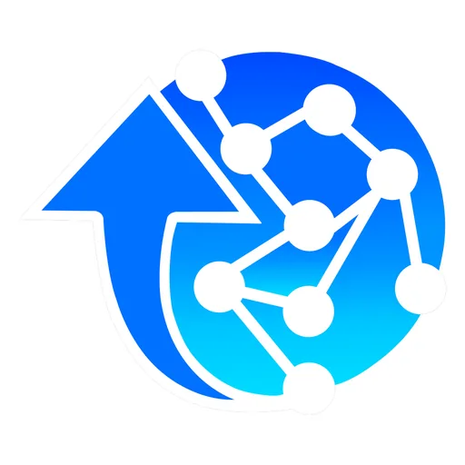

AdZU AZUL Hub (TBI)
Ateneo de Zamboanga University — under ACEND, with DOST-PCIEERD · Region IX
AZUL Hub is the Technology Business Incubator of Ateneo de Zamboanga University, launched in 2023 with backing from DOST-PCIEERD. It describes itself as "a space for young professionals, entrepreneurs, innovators, development workers, students, faculty, and researchers in Zamboanga City, Region 9, and Western BARMM interested in participating in technology-based and innovation-driven businesses."
- Category
- Technology Business Incubator
- Host institution
- Ateneo de Zamboanga University — under ACEND, with DOST-PCIEERD
- City
- Zamboanga City
- Region
- Region IX
- Operating status
- Operating
About the Center
Its stated vision is to be the leading centre on innovation, entrepreneurship, technopreneurship, and learning in Zamboanga City, Region 9, and Western BARMM — a mandate that reaches beyond the campus into the Bangsamoro region.
AZUL Hub sits inside ACEND (Ateneo Center for Entrepreneurship, Innovation, and Development), founded in 2024 as the university's umbrella office. ACEND itself is not the incubator — it unites three distinct pillars, of which AZUL Hub is one:
Programs & Services
- Startup Incubation Program — a structured program supporting early-stage startups through mentoring, capacity building, and access to resources, helping ideas grow into viable and sustainable ventures.
- Startup Mentoring / Coaching Services — one-on-one and group mentoring with faculty, industry experts, and practitioners to refine business models, strategies, and operations.
- Feasibility Study / Thesis Consultations — advisory support for students, researchers, and innovators developing feasibility studies, theses, and research outputs aligned with commercialization.
- Co-Working Space & Virtual Office — a collaborative work environment plus virtual office services giving startups a professional base to work, meet, and build.
- Ecosystem Building and Networking Events — activities connecting startups with mentors, investors, industry partners, and government agencies to strengthen the regional startup ecosystem.
- Immersion and Exposure Program — industry visits, startup immersions, and exposure activities for practical, real-world insight.
- Skill Development and Certifications — training and certification courses covering entrepreneurial, technical, and professional skills.
- Pitching Competition & iDemo — AZUL runs an ideation track, a pitching competition, and an iDemo and Completion Ceremony marking the end of an incubation cohort.
- Regional partnerships — in July 2026, AZUL Hub, DTI Region IX, and MSU-Sulu forged a partnership advancing innovation and startup development, extending the hub's reach into Sulu.
Sources: AZUL Hub · ACEND · AZUL Hub on Facebook · AZUL Hub, DTI IX, MSU-Sulu partnership (July 9, 2026)
Contact
Sources & references
- adzu.edu.ph/about-us/azul-hub
- pia.gov.ph/news/2023/02/28/dost-adzu-opens-azul-hub-in-zambo-city
- projects.pcieerd.dost.gov.ph/project/1211460
Details are drawn from public records and the sources above, July 2026.
Startupreneur Innovation Hub · synced from the Notion catalog (July 2026) · status: published.